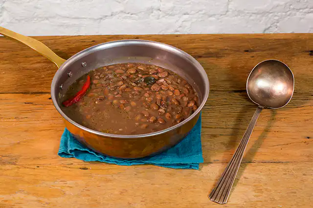

Bean
Do you see a bag of beans in the cupboard and have no idea how to prepare them?
Well, here's your salvation.
Ingredients
- 2 cups of split beans (or carioca, or rosinha)
- 4 cups (tea) of water
- 6 cups (tea) of water
- 1 onion
- 3 cloves of garlic
- 2 tablespoons of olive oil
- 2 bay leaves
- 1 pimenta dedo-de-moça (opcional)1 finger pepper (optional)
- salt and freshly ground black pepper to taste
Steps
- Place the beans in a sieve and wash under running water.
Transfer the grains to a bowl and cover with water – if any float, discard.
- Cover the bowl with a plate and let the beans soak for 12 hours.
Change the water once during this period – soaking reduces cooking time and
eliminates substances that make the beans indigestible.
- Discard the soaking water. Transfer the grains to the pressure cooker,
cover with water and add the bay leaves.
- Cover the pan and place over high heat. As soon as it starts to whistle, lower the heat and
let it cook for another 10 minutes. Turn off the heat and let all the steam escape before
opening the pan.
- While the beans are cooking, peel and finely chop the onion and garlic cloves.
Wash, dry well and keep the finger pepper whole.
- Place a frying pan over low heat. When heated, drizzle with olive oil,
add the onion and season with a pinch of salt. Saute for about 5 minutes,
until it starts to brown, add the garlic and finger pepper, stir for another 1 minute to
perfume.
- Add 2 ladles of cooked beans, with a little of the broth, mix and mash the beans with a
spatula – this puree helps to thicken the broth.
- Transfer the stew with the crushed grains to the pan with the cooked beans.
Season with salt and pepper to taste, mix and cook over low heat, uncovered, for another
10 minutes or until the broth thickens – this time may vary according to the desired
consistency, thinner or creamier. Stir from time to time so it doesn't stick to the
bottom of the pan. Turn off the heat and then serve.
Home